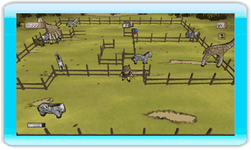

6 |
Le Basi del Gioco |
 |

Il fine è separare le varie specie di animaletti costruendo delle recinzioni. Il livello è completato appena tutte le specie differenti sono separate.
Per esempio, se in un livello ci sono 3 maiali, si vince riunendo i 3 maiali nello stesso recinto, o creando 3 recinti differenti, uno per ogni maiale. Comunque, si acquisiscono più punti rinchiudendo molti animaletti della stessa specie nello stesso recinto. Pianificando con cura dove e quando distruggere e ricostruire le recinzioni, vincerai un trofeo d'oro in un batter d'occhio.
Però, devi fare attenzione, perché ogni volta che tocchi un animaletto, perderai una vita. E alcuni animaletti non vogliono far altro che toccarti. Hai tre vite per ogni livello. Se perdi tutte le vite, devi ricominciare il livello.
Il gioco salverà automaticamente i tuoi progressi e il punteggio massimo alla fine di ogni livello. |
 |
 |
 |